Overnight run, July 25, 2026. Five minutes; everything below is in this folder.
Decided tonight
Masses are drawn with Studio's Pen tool, traced free. Snap-to-grid is dead — at 8 mm the crane's legs collapse into crumbs.
The tracing surface is the .mosaic in Mosaic's Transparent view — the photo showing through the tiles.
The ladder is mosaic, then relief, then deep relief. "In the round" is the physical brick build, not a software rung.
The brick vocabulary returns as a display-only 8 mm Stud Grid lattice, not as snapping.
Six masses is the right count for the crane. Four merges crown, head, and bill into one blob — the bird is gone.
About 14 mm of spread reads as relief, about 22 as deep relief; past about 36 a chained figure shears apart. (A nested figure like the buffalo has no such ceiling.)
Walls stay smooth. Plate seams read as laminated cardstock and brick seams as stray scratches; what reads as LEGO is studs on the 8 mm grid, and the print cannot show a seam anyway — same solid, 2.5x the triangles.
The evidence, in order
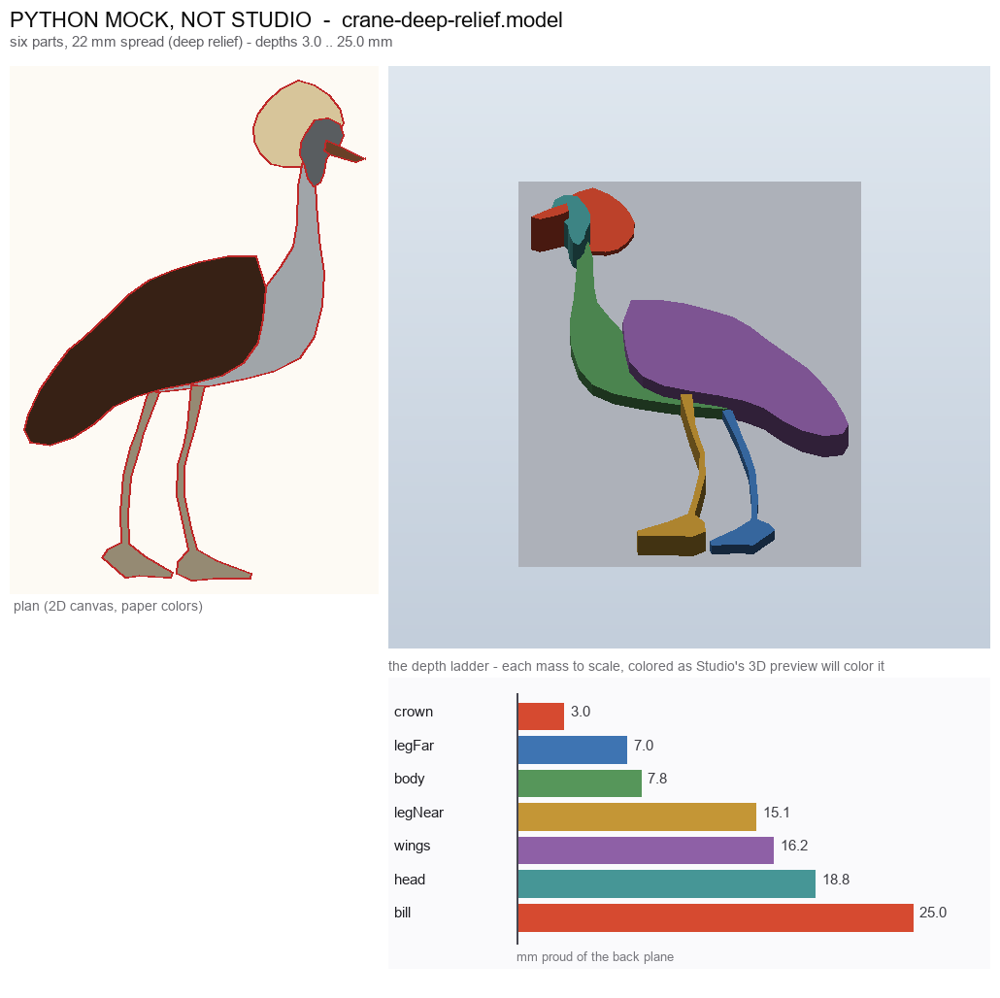
The destination: six free-traced masses at 22 mm — the crane reads at a glance, and the ladder shows every depth a student would set.
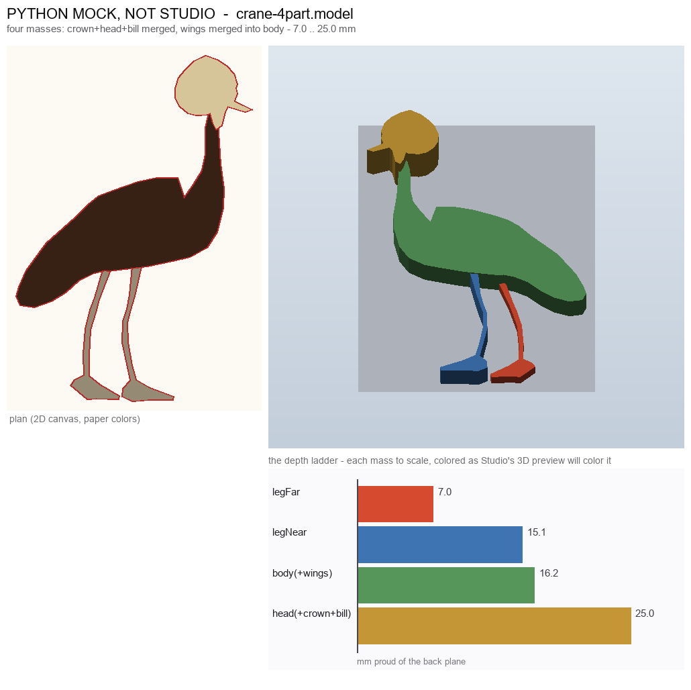
Why six masses and not four: merging crown+head+bill turns the crane's head into a blob — the bill and crest vanish.
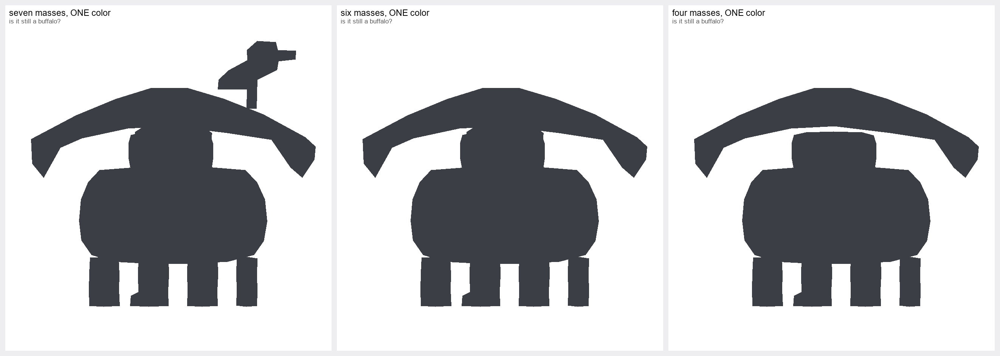
The buffalo breaks the crane recipe: head-on, the silhouette is a blob under an awning at any mass count — the problem is pose, not roundness.
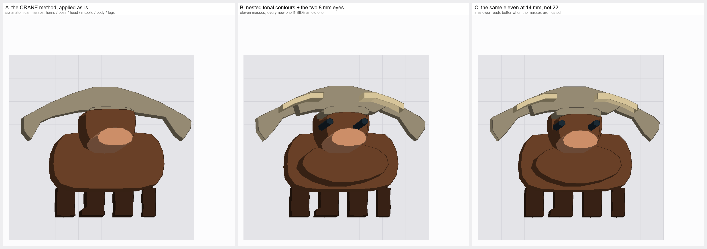
The fix: trace the mosaic's light-inside-dark tones instead of anatomy, and add the two one-tile eyes — A is a lump, B is a bovine.
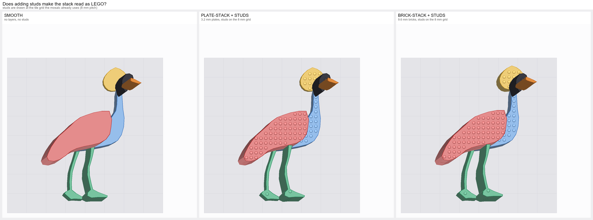
What actually reads as LEGO: studs on the 8 mm grid flip it instantly — plate seams never did — and they show where the free outline slices a stud in half.
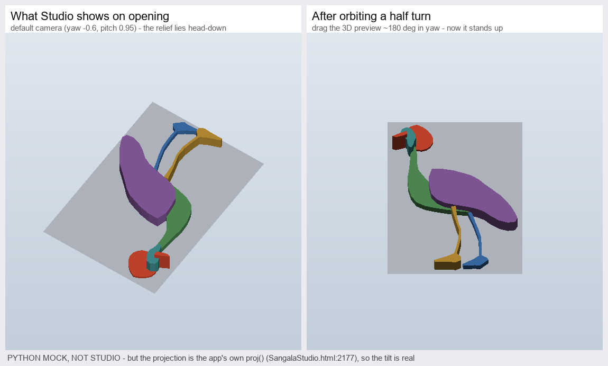
Before opening the .model files: Studio's default camera shows the relief head-down — orbit a half turn and the bird stands up.
More, if wanted
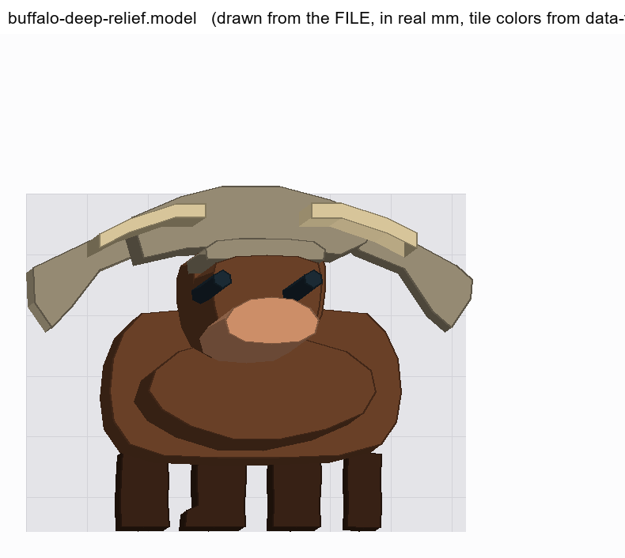
The best 3D buffalo: 11 nested tonal masses, real tile colors, eyes present. A horned bovine facing you — generic, not yet Cape (horn tips and ears did not survive 32x32).
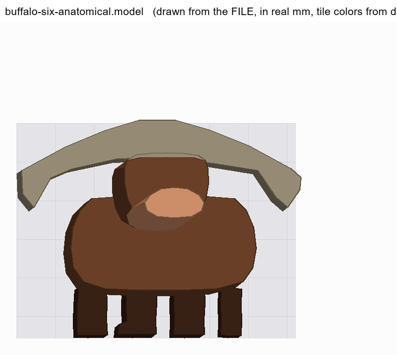
Its failure half: the crane method as-is — no eyes, muzzle lost in the head. Only meaningful next to the one on the left.
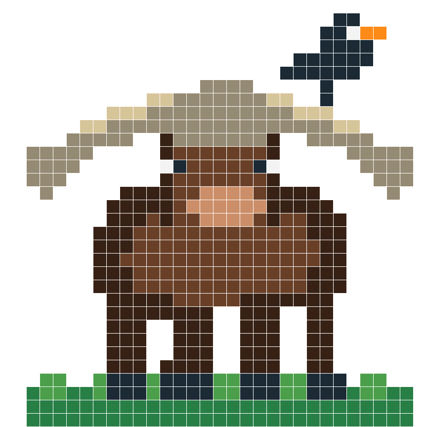
The mosaic itself — the most charming buffalo image in the set. It reads better than every 3D treatment of it.
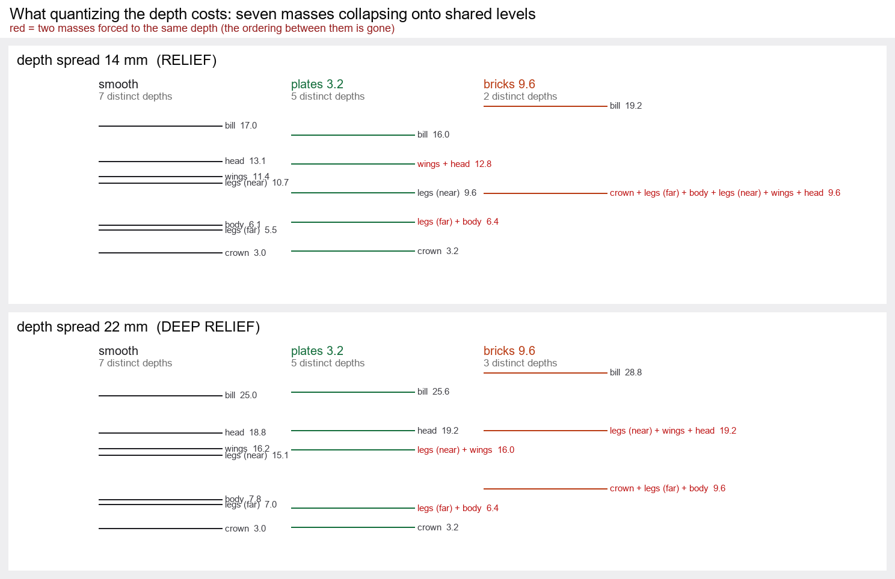
The quantization cost, legibly: at 22 mm, 3.2 mm plates keep 5 of 7 crane depths; 9.6 mm bricks keep 3, and only 2 at the 14 mm rung.
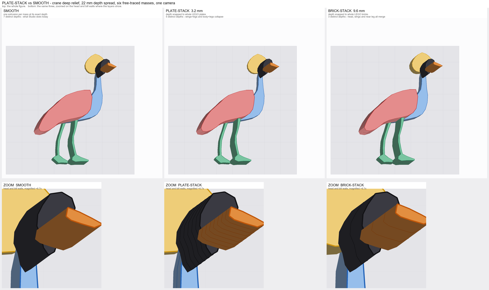
Smooth vs plates vs bricks: identical at table distance (top row); at zoom the seams read as laminated cardstock, not brickwork.
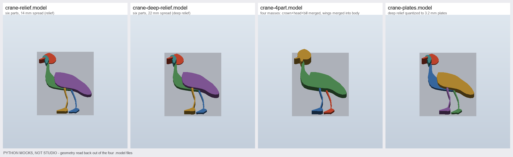
The four crane files side by side. Only the 4-part panel visibly differs — the gold head blob.
Files you can open in Studio now
All seven are in this folder, validated field-by-field against openProject/restoreState. Each opens in 3D mode with every mass a loose polygon carrying its own editable Depth and Base.
C:\Users\glenb\AppData\Local\Temp\claude\D--Code-Projects-Silhouette-Tools\007867cf-5607-4290-b0ca-6ecdbe62cf01\scratchpad\morning\crane-relief.model
The crane at the relief rung: 7 polygons, 14 mm spread (depths 3.0 to 17.0 mm).
C:\Users\glenb\AppData\Local\Temp\claude\D--Code-Projects-Silhouette-Tools\007867cf-5607-4290-b0ca-6ecdbe62cf01\scratchpad\morning\crane-deep-relief.model
The same six masses at the deep-relief rung, 22 mm spread (3.0 to 25.0 mm). The headline file.
C:\Users\glenb\AppData\Local\Temp\claude\D--Code-Projects-Silhouette-Tools\007867cf-5607-4290-b0ca-6ecdbe62cf01\scratchpad\morning\crane-4part.model
The four-mass merge, for contrast. Open beside the one above to see the head go.
C:\Users\glenb\AppData\Local\Temp\claude\D--Code-Projects-Silhouette-Tools\007867cf-5607-4290-b0ca-6ecdbe62cf01\scratchpad\morning\crane-plates.model
Deep relief with every depth snapped to 3.2 mm plates. Seven masses land on five distinct heights — body merges with the far leg, wings with the near leg.
C:\Users\glenb\AppData\Local\Temp\claude\D--Code-Projects-Silhouette-Tools\007867cf-5607-4290-b0ca-6ecdbe62cf01\scratchpad\morning\buffalo-deep-relief.model
Moses's buffalo, 11 nested tonal masses at 22 mm, including the two one-tile eyes.
C:\Users\glenb\AppData\Local\Temp\claude\D--Code-Projects-Silhouette-Tools\007867cf-5607-4290-b0ca-6ecdbe62cf01\scratchpad\morning\buffalo-relief.model
The same masses at 14 mm — which reads better head-on.
C:\Users\glenb\AppData\Local\Temp\claude\D--Code-Projects-Silhouette-Tools\007867cf-5607-4290-b0ca-6ecdbe62cf01\scratchpad\morning\buffalo-six-anatomical.model
The crane method applied to the buffalo, unchanged — the instructive failure. Open beside buffalo-relief.
One caveat. Every outline in these files is a red cut line, so if you switch to 2D and press Make It, all of them go to the die cutter. Stay in 3D (they open there). The real mosaic importer needs to mark such masses 3D-only.
Two smaller notes: the default 3D camera shows the figures head-down — orbit about a half turn in yaw (see the camera image above). And the 3D preview colors come from Studio's fixed piece palette; the tile colors you stored show in the plan view and Print, not in 3D.
Still yours to decide
The buffalo is 231 x 178 mm at 8 mm per cell — wider than the Portrait 3's 203 mm mat and Jo's 180 mm print bed. Re-pose, shrink the grid, or call it a Cameo 2 design?
Does the chapter teach the head-on fix (trace nested tones, add the eyes), or tell students to crop their animal in profile like the crane?
Snap the Depth field to 3.2 mm plates as an option? It is a near-zero change (the field's step plus a round) and puts the brick vocabulary in the number — at the cost of two of the crane's seven depths.
Add a stud overlay on the relief's top faces? It is what reads as LEGO, and it shows a student where the free trace slices a stud in half before the physical build.
Horns: wait for per-edge slope / cone so a horn is one sloped mass instead of a plank? Studio already owns the instrument (roofTris).
Should grouping the paired parts (the two legs) be part of the recipe, or stay loose so each keeps its own Depth field?
The buffalo verdict
The method survives the round animal, but not unchanged, and the reason is not the one we expected. What broke the crane recipe was pose, not roundness: Moses framed the buffalo head-on, and head-on an outline carries almost no species — anatomical masses gave stacked boxes at every depth from 0 to 36 mm. The fix is a different tracing instruction: trace the mosaic's tones, light core inside dark rim, and add the two eyes — each a single 8 mm tile, and decisive. Three corrections to last night's numbers, all from looking: nested masses have no shear ceiling (the ~36 mm limit is a property of the chained crane); shallower is better head-on, 8–14 mm beating 22; and depth ordering there is a constraint, not an expressive dimension — wrong order destroys the face, right order barely beats a flat plate. The one defeat is the horns, which extrude as planks and want a slope, not more masses. And a fact worth saying plainly: the flat mosaic reads better than every 3D treatment of it — the head-on animal wants more nested masses at less depth, not more depth.